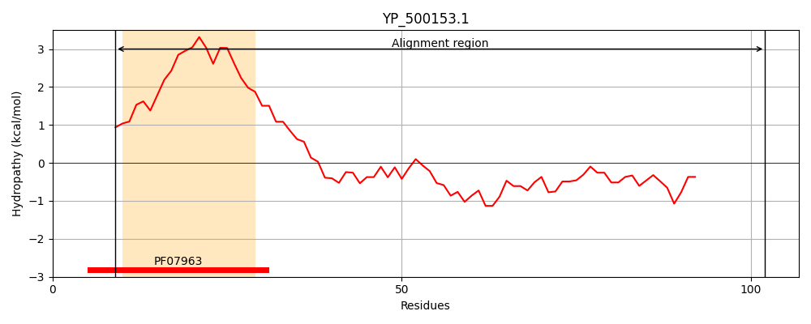
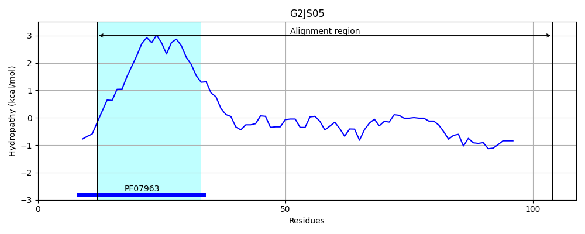
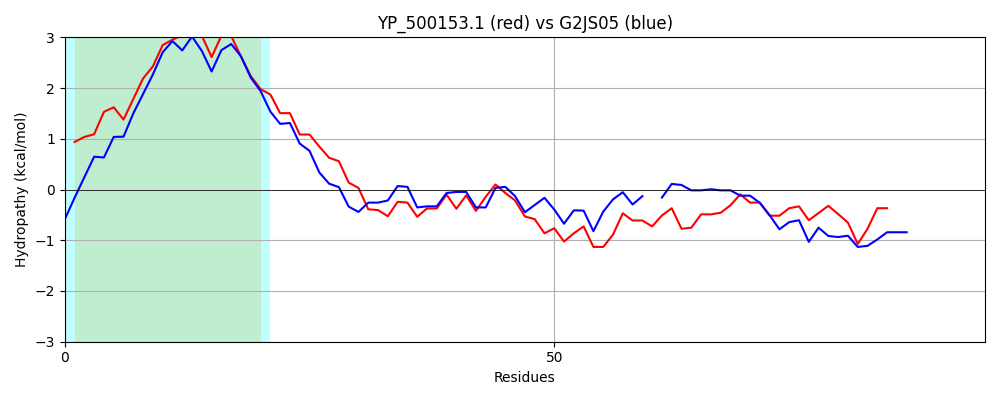

Hit Accession: G2JS05
Hit TCID: 3.A.14.1.2
Hit Description: gnl|BL_ORD_ID|4647 gnl|TC-DB|G2JS05|3.A.14.1.2 General secretion pathway protein G OS=Listeria monocytogenes J0161 GN=LMOG_00364 PE=4 SV=1
Mach Len: 94
e:0.000000
Query TMS Count : 1
Hit TMS Count: 1
TMS-Overlap Score: 1.000000
Predicted Substrates:CHEBI:8526;protein polypeptide chain
BLAST Alignment:
| Protein Hydropathy Plots: | |
|---|---|
|  |  |
Pairwise Alignment-Hydropathy Plot: | |
|  | |